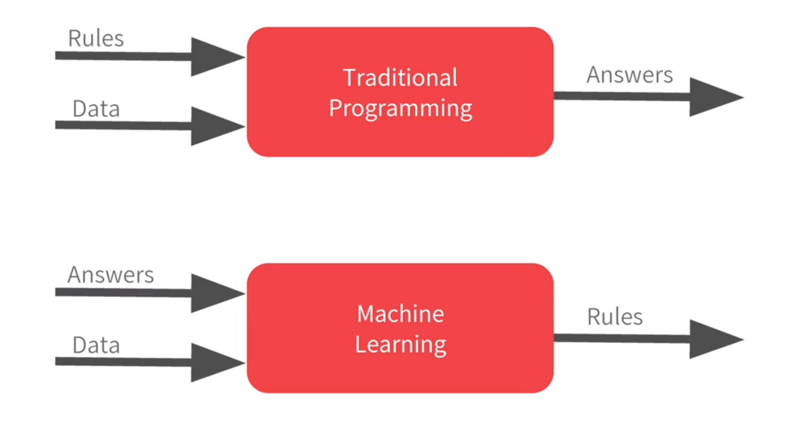
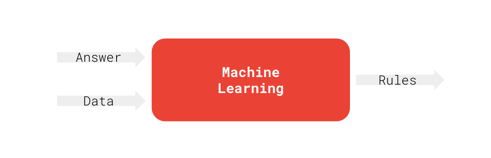
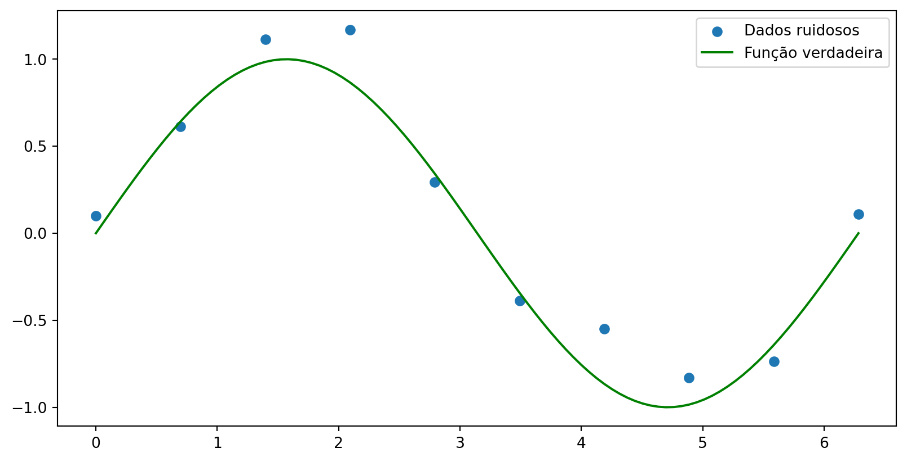

Prof. Dr. Raphael Teixeira Prof. Dr. Cleison Silva
Paradigmas de programação
Computadores e humanos têm formas diferentes de processar informações.
Programação Tradicional
Regras explícitas
Programação baseada em lógica
Difícil de lidar com tarefas complexas
Aprendizagem de Máquina
Aprendizado a partir de dados
Programação baseada em exemplos
Capaz de lidar com tarefas complexas

Tarefas complexas: reconhecimento de voz, visão computacional, tradução automática, etc.
Tarefa complexa
Como classificar um e-mail como spam ou não-spam?
\[y = f(x)\]
Aprendizagem de máquina: definição

Dados \(x\): características ou atributos de um exemplo;
Resposta \(y\): o que queremos prever ou classificar;
Algoritmo de aprendizagem \(f\): processo que aprende a partir dos dados;
Ajuste de curva - Polinomial
Considera-se o problema de regressão: ajustar uma curva polinomial \(\hat{y}(x)\) a um conjunto de \(n\) pontos \(\{(x_i, y_i)\}_{i=1}^n\). O objetivo é encontrar um polinômio (modelo) de grau \(M\) que melhor se ajuste aos dados, o qual é dado por: \[\hat{y}(x, \mathbf{w}) = w_0 + w_1 x + w_2 x^2 + \ldots + w_M x^M = \sum_{j=0}^M w_j x^j\]
Neste caso \(\hat{y}(x, \mathbf{w})\) é a função de predição do modelo. Que explica, com algum erro \(e_i\) a relação entre \(x_i\) e \(y_i\): \[ \hat{y}(x_i, \mathbf{w}) = y_i + e_i\]
Ajuste de curva - Polinomial
O modelo polinomial pode ser reescrito de forma mais compacta utilizando notação vetorial com o vetor de características \(\boldsymbol{\phi}(x) = [1, x, x^2, \ldots, x^M]^T\) e o vetor de pesos \(\mathbf{w} = [w_0, w_1, w_2, \ldots, w_M]^T\) com o produto escalar:
Ou seja: \[\hat{y}(x, \mathbf{w}) = \mathbf{w}^T \boldsymbol{\phi}(x)\]
Ajuste de curva - Polinomial
O ajuste dos dados \(\{(x_i, y_i)\}_{i=1}^n\) ao modelo \(\hat{y}(x, \mathbf{w})\) é medido por uma função de erro \(E(\mathbf{w})\), como a função de erro quadrático: \[E(\mathbf{w}) = \frac{1}{2} \sum_{i=1}^n (\hat{y}(x_i, \mathbf{w}) - y_i)^2\]
O objetivo é encontrar os pesos \(\mathbf{w}\) que minimizam \(E(\mathbf{w})\) para um dado modelo, ou seja: \[\mathbf{w}^* = \arg\min_{\mathbf{w}} E(\mathbf{w})\]
Diz-se que \(\mathbf{w}^*\) é a solução ótima do problema de ajuste de curva.
Ajuste de curva - Polinomial
Utilizando toda a massa de dados \(E(\mathbf{w})\) pode ser expressa na forma vetorial:
Como \(\mathbf{w}^T \mathbf{X}^T \mathbf{y}\) é um escalar, tem-se \(\mathbf{w}^T \mathbf{X}^T \mathbf{y} = (\mathbf{w}^T \mathbf{X}^T \mathbf{y})^T = \mathbf{y}^T \mathbf{X} \mathbf{w}\), ou seja: \[E(\mathbf{w}) = \frac{1}{2} \left( \mathbf{w}^T \mathbf{X}^T \mathbf{X} \mathbf{w} - 2\mathbf{w}^T \mathbf{X}^T \mathbf{y} + \mathbf{y}^T \mathbf{y}\right)\]
Ajuste de curva - Polinomial
Pode-se determinar \(\mathbf{w}^*\) de forma analítica extremando \(E(\mathbf{w})\) em relação a \(\mathbf{w}\), ou seja, encontrando os pontos críticos onde o gradiente de \(E(\mathbf{w})\) é zero.
Derivando \(E(\mathbf{w})\) em relação a \(\mathbf{w}\) e igualando a zero, tem-se: \[\nabla E(\mathbf{w}) = \mathbf{X}^T \mathbf{X} \mathbf{w} - \mathbf{X}^T \mathbf{y} = 0\]
Considera-se um conjunto de dados gerados a partir de uma função seno \(y = \sin(x)\) com ruído gaussiano \(\epsilon \sim \mathcal{N}(0, \sigma^2)\). O objetivo é ajustar um modelo polinomial aos dados. Em python pode-se gerar \(N = 10\) amostras de \(x\) uniformemente distribuídas no intervalo \([0, 2\pi]\) e calcular os valores correspondentes de \(y\) com ruído:
import matplotlib.pyplot as pltimport numpy as npnp.random.seed(42)# Número de amostrasN =10# Entradax = np.linspace(0, 2*np.pi, N)# base de tempo para a sin(x)x_true = np.linspace(0, 2*np.pi, 100)# Ruído gaussianonoise = np.random.normal(0, 0.2, N)# Saíday = np.sin(x) + noise# reshape para MLX = x.reshape(-1,1)plt.scatter(x, y, label='Dados ruidosos')plt.plot(x_true, np.sin(x_true), color='green', label='Função verdadeira')plt.legend()plt.show()
Ex: Ajuste de curva - Polinomial
O que resulta:

Ex: Ajuste de curva - Polinomial
A matriz de regressão \(\mathbf{X}\) pode ser gerada por:
import numpy as npdef MatrizRegressao(x, M):""" Gera a matriz de regressão X para um polinômio de grau M. n: número de pontos em x M: grau do polinômio (gera M+1 colunas) """ n =len(x) X = np.zeros((n, M +1))for j inrange(M +1): X[:, j] = x**jreturn X
Ex: Ajuste de curva - Polinomial
import numpy as npdef MinimosQuadrados(X, y):""" Calcula o vetor de pesos w utilizando a Equação Normal. w = (X.T @ X)^-1 @ X.T @ y """# Matriz de regressão X e vetor de respostas y: w = np.linalg.inv(X.T @ X) @ X.T @ yreturn w
Ex: Ajuste de curva - Polinomial
Para um modelo polinomial de grau \(M=3\), tem-se:
# 1. Definir o grau do polinômioM =3# 2. Gerar a matriz de regressãoX_matriz = MatrizRegressao(x, M)# 3. Calcular os pesos ótimosw_otimo = MinimosQuadrados(X_matriz, y)print(f"Coeficientes do polinômio (M={M}):")for i, coef inenumerate(w_otimo):print(f"w{i}: {coef:.4f}")